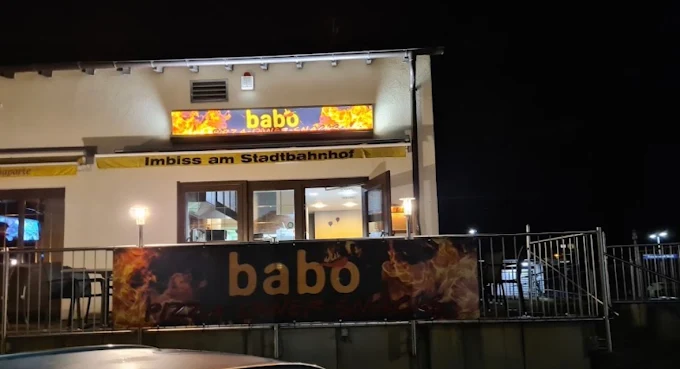
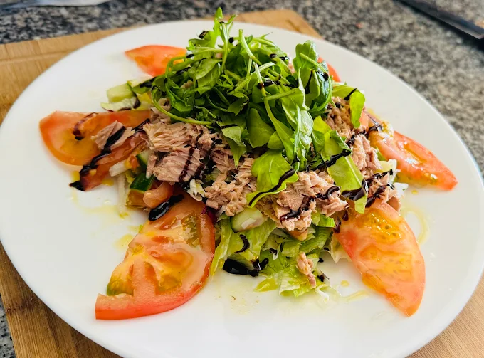
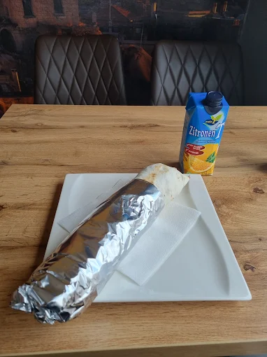
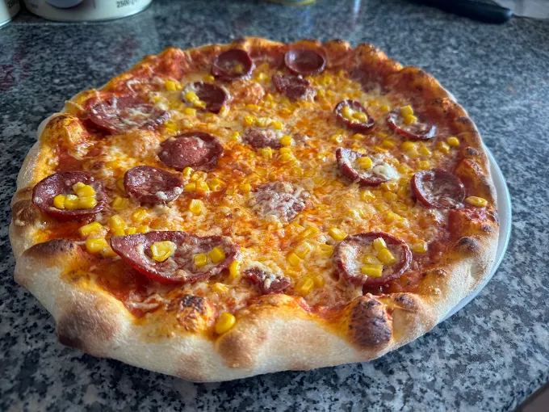

Frisch. Herzhaft. Babo.
Dein Hunger.
Unsere Antwort.
Döner, Pizza, Pide und mehr – frisch zubereitet und unkompliziert gut.
4,8★★★★★ 298 Google-Bewertungen
Dein BABO vor Ort
01 Frische Zutaten
02 Große Auswahl
03 Faire Preise
04 Vegetarisch & vegan

seit2018
Einfach gutes Essen
Gemacht für
gute Momente.
Bei BABO geht es um ehrliches Essen, gute Zutaten und den Geschmack, den man nicht erklären muss. Ob schneller Döner in der Pause oder Pizza-Abend mit Freunden – komm vorbei und fühl dich wohl.
Babo Kebab Haus ♥
Aus unserer Küche
Sieht gut aus.
Schmeckt besser.

